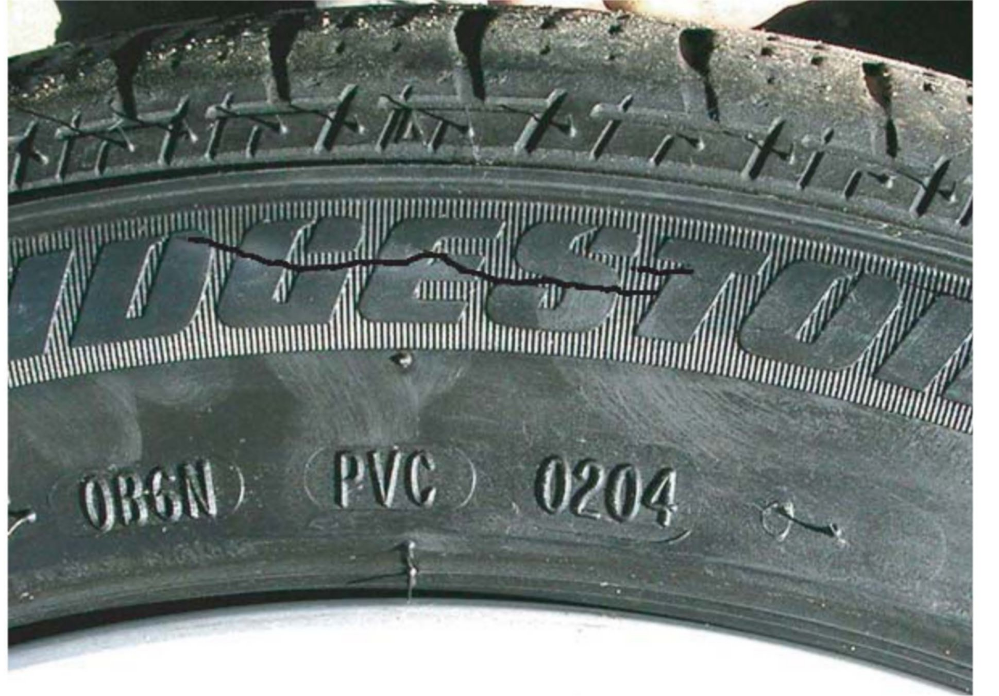

Tires - Low Profile Tire Sidewall Cracking
Sidewall Cracking on Low-Profile TiresLow-profile tires are the hot setup these days, and sure look cool, but you've got to keep the tire pressures up to spec or the sidewalls can crack. A low-profile tire in good condition can lose as much as 1 to 2 psi of pressure every month, so it's a good idea to check and adjust tire pressures at least once a month.

If you've got a vehicle in your shop with cracked sidewalls on a tire that's still under warranty, refer your service client to the appropriate tire dealer (one that services that brand) for possible goodwill consideration. Keep in mind, though, any reimbursement will likely be prorated. If your dealership does business with The Tire Rack, contact them for your client. Tire warranty is handled by a tire dealer and isn't covered under the vehicle warranty.